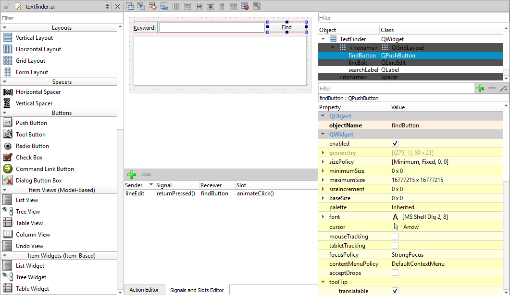

Tools for Qt Widget-Based UIs

Qt provides a tool for widget-based design called Qt Designer. The tool is also integrated into a developer tool called Qt Creator. Both tools are installed by default when you install Qt.
In addition to the design tool, you'll need several Qt modules that contain Qt Widgets and the functionality needed in UIs. Most of this functionality is included in essential Qt modules that are always installed when you install Qt. Should you find out later that you need additional Qt modules, you can add them to your Qt installation using Qt Maintenance Tool.
After the installation, you can open the examples directly from Qt Creator and run them on the desktop.